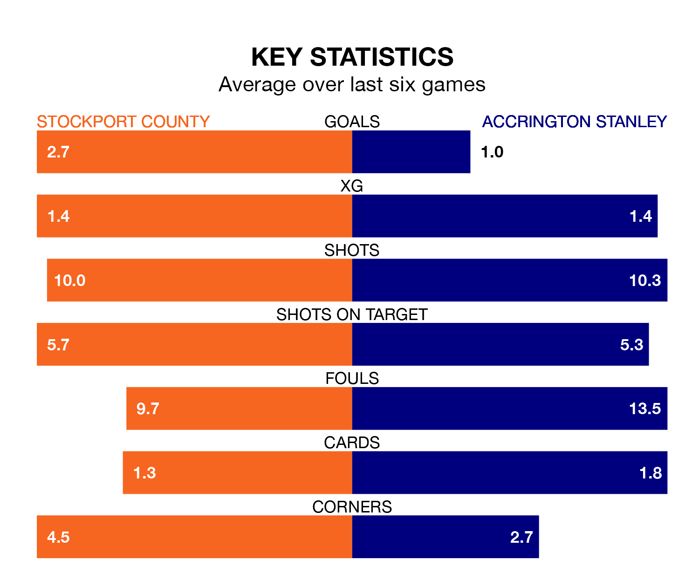

Stockport County are heavy favourites to keep all three points at home in Saturday's kick-off against Accrington Stanley.
The Hatters, who sit top of EFL League Two with 44 games played, are priced at 1.3 to seal victory at Edgeley Park.
Sitting 17 places and 35 points behind them in the table, Accrington are 8.0 to win with *Betting Company*, while the draw is at 5.3.
With 91 goals in 44 games so far this season, Stockport are the league's highest scorers with 2.1 goals per game. And they are conceding fewer than average, letting in 44 goals at a rate of 1.0 per game.
Accrington, meanwhile, are below average scorers, with 1.3 goals per game, compared to a league average of 1.5. They have conceded 1.5 goals per game.
County are in exceptional form in EFL League Two, with six wins and no losses from their last six games.
With a win and a draw over that period, Stanley's form is much worse – they have taken four points from 18, compared to the Hatters' 18.
In Ben Hinchiffe, the home side can rely on one of the league's safest pair of hands. He has kept 17 clean sheets in his 44 appearances this season, and no 'keeper has prevented the opposition scoring more often in EFL League Two.
In the visitors' net, Radek Vítek has four clean sheets in 16 games. He has conceded a goal every 60 minutes, 60% more often than the 94 minutes between goals for Hinchiffe.
Stockport's last match was on Tuesday, a 5-2 win against Notts County, with Paddy Madden (three), Antoni Sarcevic and Ethan Pye getting the goals for the Hatters.
Accrington lost 2-1 against Mansfield Town last time out, also on Tuesday, with Tommy Leigh on the scoresheet.
Saturday's match will be refereed by Simon Mather, who has taken charge of 13 EFL League Two games so far this season, issuing two red cards and booking 62 players. He has awarded three penalties.
The last Accrington game Mather refereed was the 1-1 draw away at Barrow on December 29. He is yet to oversee a match featuring Stockport this season.
Updated: 15:40 (UTC), 18/04/24